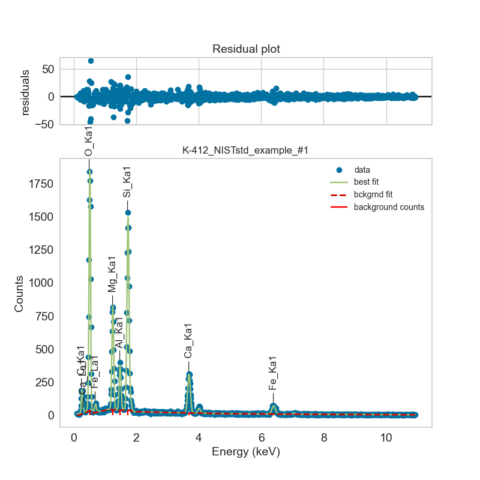
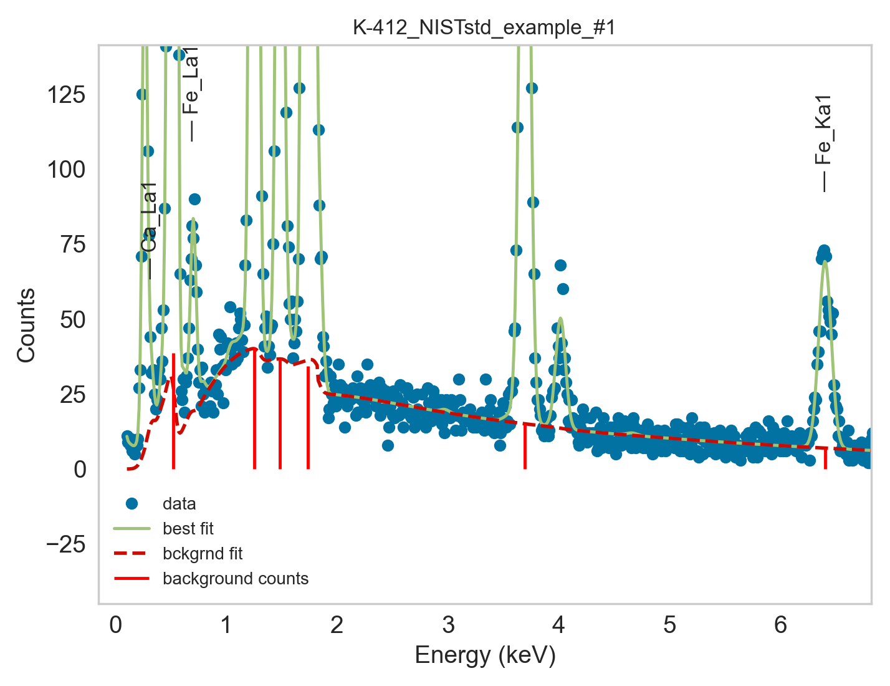

Tutorial: Fit and quantify individual spectra
This tutorial shows how to fit–and optionall quantify– a single EDS spectrum,
using the Fit_Quant_Single_Spectrum.py script.
This allows to select an individual spectrum from the acquired data and visualize the fitted spectrum for inspection of model fitting performance.
This script also prints the full fitting and quantification process steps, prints the employed fit parameters and their final values.
It also enables further customization options for fitting and quantification for evaluating the performance of different EDS models, allowing to define a set of parameters to use in your standard EDS quantification operations.
Step 1 - Open script to edit
Open autoemxsp/scripts/Fit_Quant_Single_Spectrum.py.
Step 2 - Define Spectrum to Fit
Set the spectrum to analyse by defining:
sample_ID: name of the sample folder. Include any counter if present (e.g. ‘Wulfenite_2’).spectrum_ID: ID of the spectrum to fit. You’ll find this int number in the first column of Data.csv inside the folder namedsample_ID.results_path: absolute or relative path to the project folder, containing thesample_IDdata. AutoEMXSp will search for a folder namedsample_IDin any of the subfolders withinresults_path.
Step 3 - Modify Parameters
Modify the rest of the parameters to match to the sample you’re fitting.
For details on the parameters, see the API for the fit_and_quantify_spectrum
function.
Step 4 - Launch script
Visualise the fitted spectrum and evaluate goodness of fit.
{kind=link}

The background fitting is especially important when it comes to peak-to-background EDS quantification.
{kind=link}
